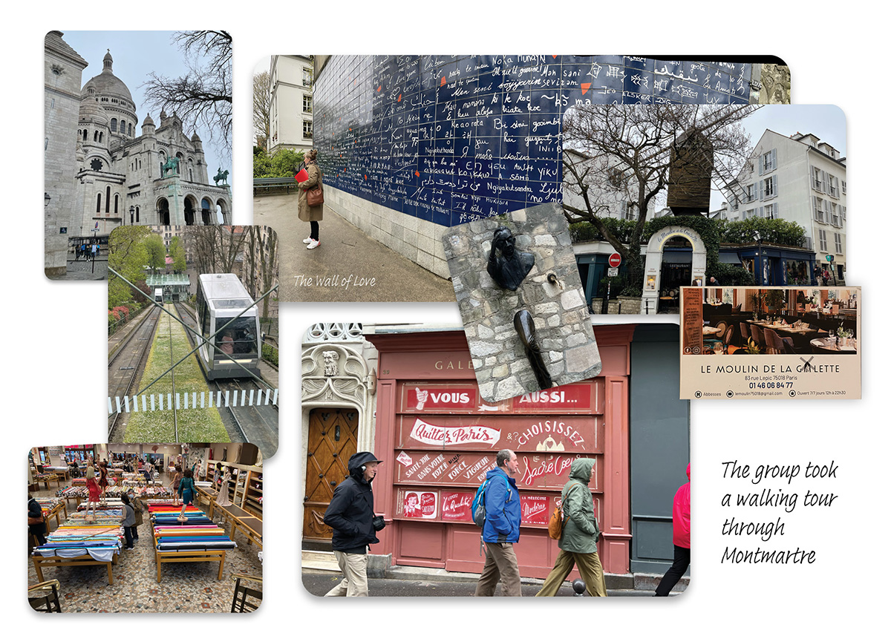
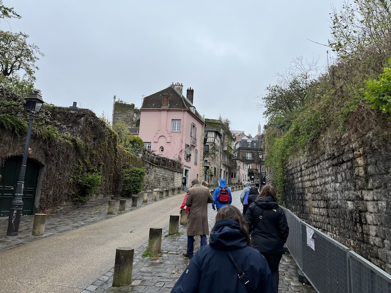
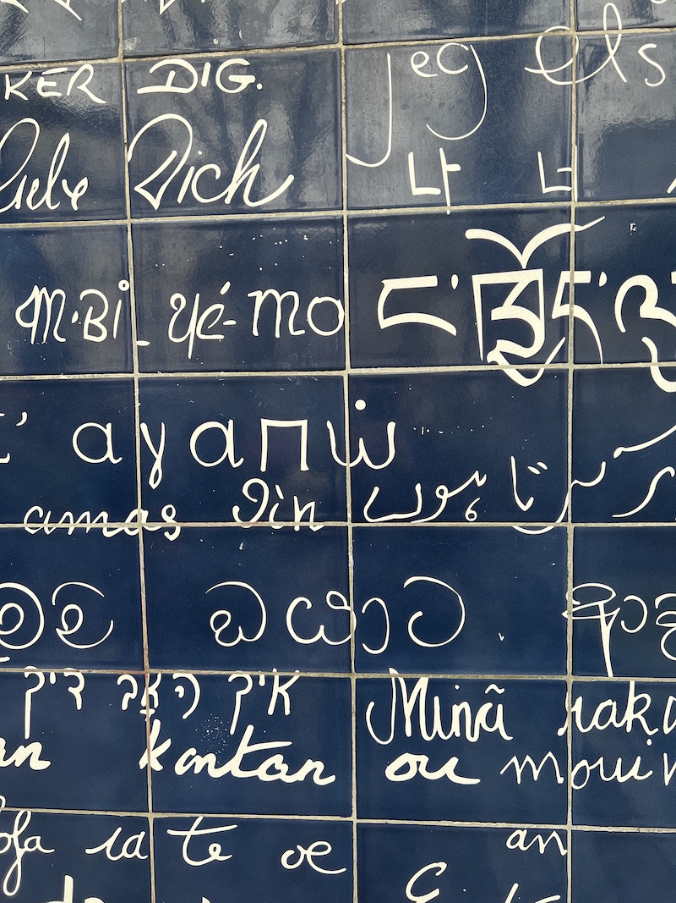
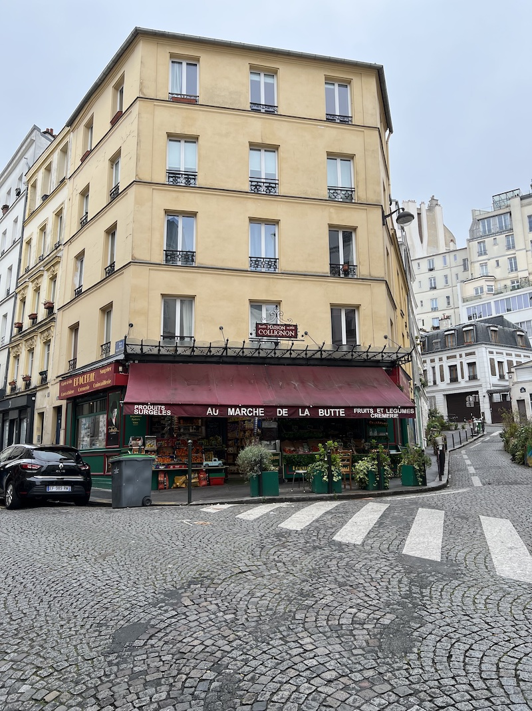
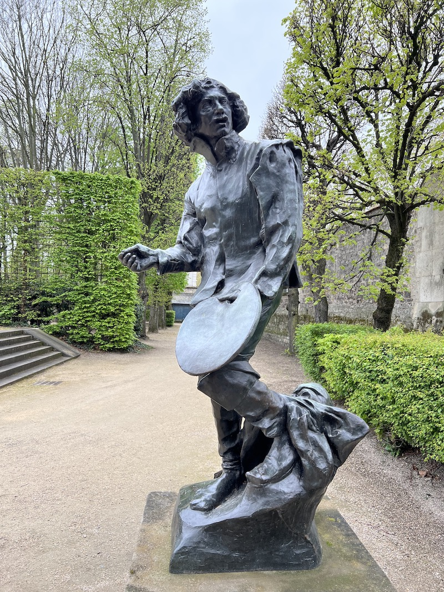
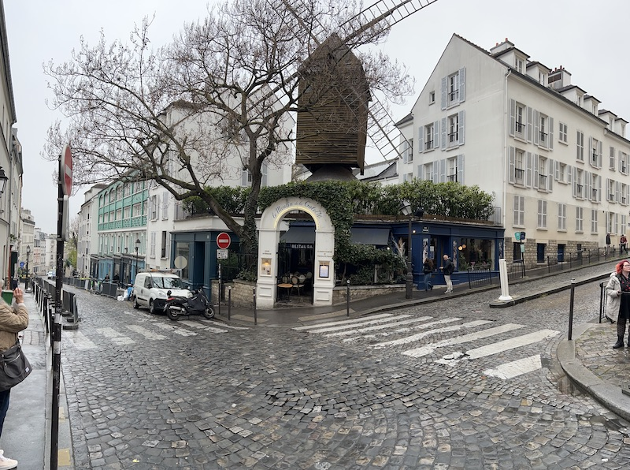
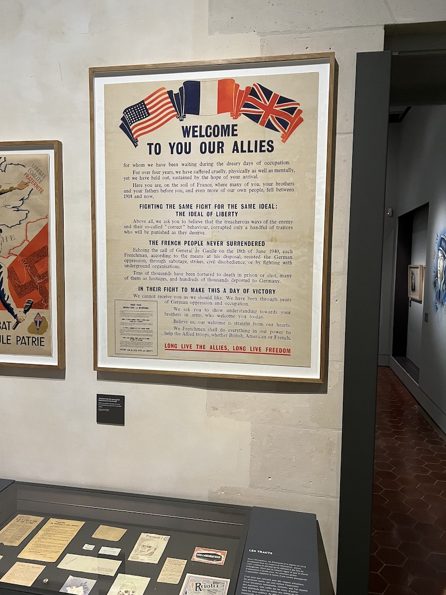
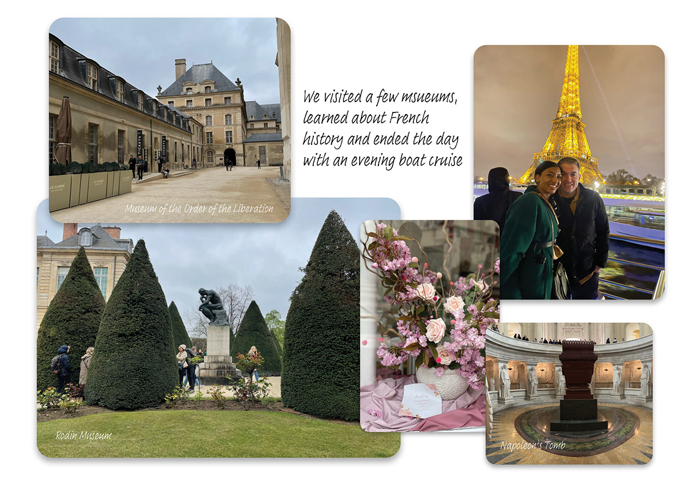
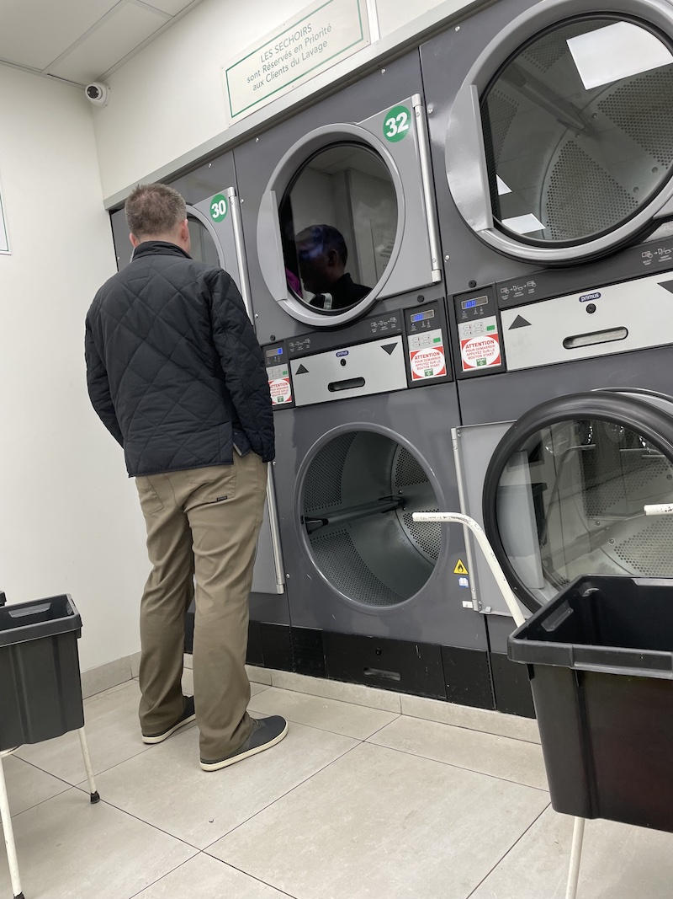

Day 3: An Art-Themed Tour of Montmartre
On day three, the group headed to Montmartre, where we met with our excellent tour guide, Brigitte, for a walking
tour around the neighborhood. We loved this tour because it was packed with many fascinating connections to art and
film! We saw Renoir’s home, Van Gogh’s apartment, and the grocery store from the movie
Amelie. We also learned about
a few new-to-us literary gems like the short story Le Passe-Muraille, a tale about a man who could walk through walls.

The neighborhood was hilly and beautiful, and we ended the walk at the famed basilica Sacré-Coeur. If you’ve ever
seen the film "An American In Paris," you’ll know the neighborhood and the stunning view of Paris you can see from
the hilltop.



Connecting with Locals
We always try to learn more about our hobbies and broaden our horizons by seeking out hwo people
in other places pursue the same interests. After the group tour concluded, we had some free time and decided to take the funicular to browse the many fabric
shops that were located just at the bottom of the hill. Jess is a hobby seamstress and was delighted to get the
chance to wade amongst the endless bolts of fabric and see the professional seamstresses zipping around.
We then returned to the top of the hill to stroll and window-shop. We wound up in a pet shop, where Bill
unthinkingly said “Bonjour” to a dog, which was funny to everyone present and led to a lovely conversation with
store patrons. We decided to buy a souvenir for our puppy Rigby, and Bill even got to practice French a bit with
the cashier, who patiently helped pronounce the numbers in the price.

Eating in a Renoir Painting
We hadn’t made dinner plans but remembered passing Le Moulin de la Galette, the windmill-topped restaurant from
the
famous Renoir painting. We got a table there, where we both ordered beef bourguignon and took our time savoring the French specialty.

The Rodin Museum
After lunch, we took the metro across the river to the area near our hotel to see the Rodin Museum at Marie’s
recommendation. It was an extraordinary sculpture garden
that houses The Thinker and the famous sculpture
"Gates of Hell". In addition to the art,
the topiaries in the garden were
also like sculptures and clipped to perfection. This was one of our favorite spots of the day, and we marked
the occasion by buying a miniature Thinker statue in a wooden crate to take home with us.
Les Invalides
Next, we visited the museum Les Invalides, with its beautiful golden dome.
Here, saw Napoleon’s tomb, an imposing sarcophagus that was larger than life.
We also visited the Museum of the Order of the Liberation, where we learned about the heroic stories of French
Resistance members who helped liberate France during World War II. It was a moving experience that we highly recommend.


Finally, we returned to the hotel for a low-key evening of pastries at
Laurent B. and washed a load of laundry.
We then went out for a group dinner and a Seine river cruise. The cruise around the illuminated
skyline was stunning, and we got an incredible view of Notre Dame and other landmarks. It was even perfectly timed to
watch the Eiffel Tower sparkling!
{% include next_button.html text="On y va! (\"Let's go!\")" url="day4.html" %}